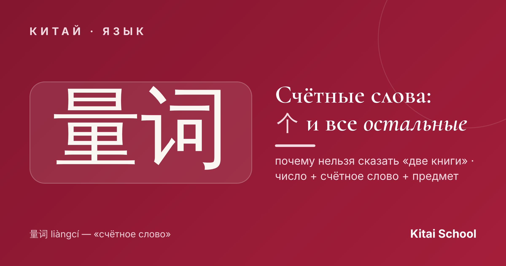
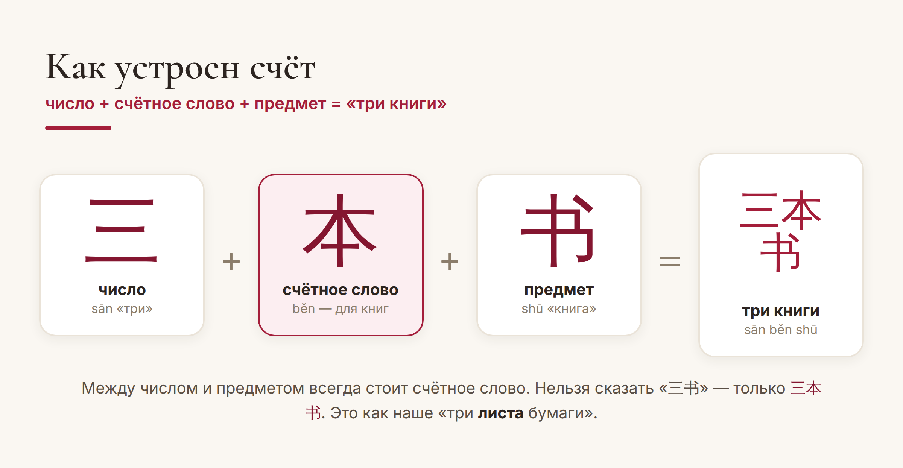
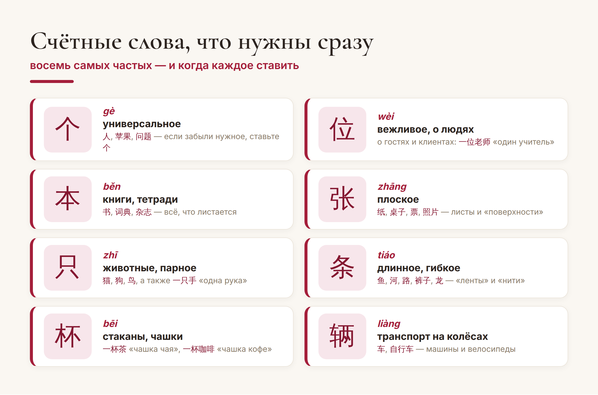

Китай · язык

В китайском нельзя просто сказать «две книги» или «три собаки». Между числом и предметом обязательно встаёт особое слово — счётное. Новичков это ставит в тупик, но на самом деле принцип нам хорошо знаком: мы ведь тоже говорим «два листа бумаги», а не «два бумаги».
Разберёмся, зачем нужны счётные слова, как они работают и какие выучить в первую очередь.
Формула простая и всегда одна и та же: число + счётное слово + предмет. Хотите сказать «три книги» — берёте 三 (sān, «три»), нужное счётное слово 本 (běn) и сам предмет 书 (shū, «книга»): получается 三本书 (sān běn shū). Сказать 三书 нельзя — язык этого не допускает.

Счётное слово подсказывает, какой это предмет: плоский, длинный, живой, книжка или чашка. Оно как бы «сортирует» существительные по форме и типу. Именно поэтому счётных слов много — но пугаться не стоит: в быту вы будете крутиться вокруг десятка.
Если запомнить только одно счётное слово, пусть это будет 个 (gè). Оно универсальное: подходит к людям (一个人 — «один человек»), к фруктам, к абстрактным вещам вроде вопроса или идеи. Забыли нужное счётное слово — смело ставьте 个. Вас поймут, и в живой речи это часто звучит совершенно нормально.
Лайфхак для начинающих. На старте выучите 个 и говорите с ним. Постепенно, по мере практики, добавляйте «специальные» счётные слова — они запомнятся сами, когда вы будете встречать их в реальных фразах.
Кроме 个, есть ещё несколько, которые встречаются постоянно. Вот те, что стоит выучить в первую очередь:

Обратите внимание на логику: 张 (zhāng) — для всего плоского (бумага, стол, билет, фото), 条 (tiáo) — для длинного и гибкого (рыба, дорога, река, брюки), 只 (zhī) — для животных. Формы подсказывают выбор, и со временем вы начинаете «чувствовать» нужное слово.
«Два» — особый случай. Когда мы считаем предметы, «два» — это не 二 (èr), а 两 (liǎng). «Две книги» — 两本书 (liǎng běn shū), а не 二本书. 二 остаётся для чисел «как чисел»: счёт, номера, математика.
Вежливое 位. Когда речь о людях, которых вы уважаете, — о госте, клиенте, учителе — вместо 个 берут 位 (wèi): 一位老师 — «один учитель», уважительно. Мелочь, а звучит совсем иначе.
Вот и весь секрет: счётные слова — не бессмысленная зубрёжка, а способ языка сказать, что именно вы считаете. Начните с 个, добавляйте остальные по одному — и очень скоро вы будете расставлять их не задумываясь.
Считайте по-китайски легко! 熟能生巧。